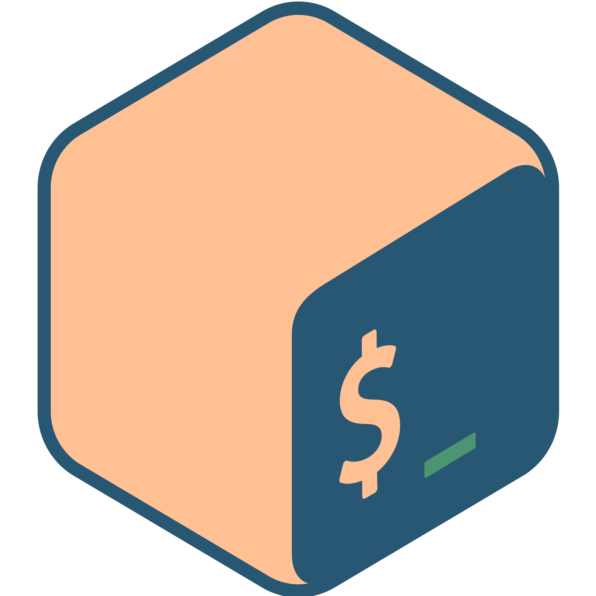

The project aims to assist users in practicing bends by detecting and plotting bends on a time (x-axis) and pitch (y-axis) graph. By comparing the results to standard bending techniques, users can identify specific aspects of their bends that need improvement.
Additionally, the project helps users understand the target pitch of their bends, indicating whether they have overshot or undershot the desired pitch. A future goal is to detect bends in a WAV file and analyze them, allowing users to compare their bends to specific references.
Primarily, this project serves as a discovery initiative to learn about sound processing. The priority is to gain comprehensive knowledge in the field of sound processing and develop a quality product without heavily relying on existing libraries and frameworks.
To show the current phase of the project, the following milestones outline the ongoing and planned tasks:
- Detect Pitch Notes
- Experiment with different methods based on research papers
- Methods relying on the waveform
- Methods relying on the frequency
Python
Bash/Shell